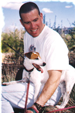
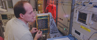
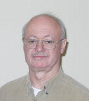

Dr. Dobb's Journal June 2007
Employer: Self
Job: External Consultant
DDJ: What's your job, exactly?
CR: I'm a turnaround specialist, fixing broken software projects and companies.
DDJ: What do you like about your job?
CR: Helping others find their strengths so they can maximize both their development at work, and their contributions beyond work. Advancing the development of others despite diverse personalities, talents, and interests. Perhaps most importantly, imparting a sense of global purpose and the confidence to make a difference.
DDJ: What do you find challenging about your job?
CR: People should realize that everyone's strengths are different. Great accomplishments are achieved by working with others whose skills complement yours. Implementing this realization produces a person with respect for others, and the confidence to work with them when the problems require a positive approach, integrity, persistence, and tolerance.
DDJ: What have you found that makes your job easier?
CR: I found this in the U.S. Army's Ranger Survival Manual: Maintain a strong and positive psychological outlook at all times. More than any other item, this quality is essential for both survival and success in facing one's mission, and oftentimes daunting odds.
Employer: ASAF
Job: Subject Matter Expert
DDJ: Where do you work?
DJ: I work for the 516th Software Maintenance Group at Hill Air Force Base in Utah.
DDJ: What's your job there?
DJ: My background is electrical engineering, RADAR and automatic test systems. I am currently working as the subject matter expert in microwave circuit test and repair.
DDJ: What do you like about your job?
DJ: There is a lot of variety in the work we do. From designing and integrating new test systems, finding root cause of hardware failures, to writing the programs technicians use to repair circuit cards. There is always a new and interesting challenge just around the corner.
DDJ: OK, what do you find challenging about your job?
DJ: I often find myself having to reverse engineer a system or code segment that was written long ago or very poorly documented. On older systems the people with the answers just aren't around anymore.
DDJ: What have you found that makes your job easier?
DJ: We have to process a lot of old code, dead languages to modern test platforms, and some home-grown translation tools created with lex and yacc have really helped speed up this effort.
Employer: Harmonia
Job: Lead Developer
DDJ: What do you like about your job?
PT: Marc Abrams runs the company and I work with him every day. [Marc is] the father of the User Interface Markup Language (UIML), a specification for an abstract meta-language that can provide a canonical XML representation of any user interface. How many developers get the opportunity to work shoulder-to-shoulder with the inventor of the technology that forms the core of what they do? Using UIML to develop the human-computer interface for mission-critical DoD applications is exciting.
DDJ: What do you find challenging?
PT: The exponential rate at which technology is growing makes any developer's job, including mine, a challenge today. Meeting that challenge means making informed choices between a technology that is a passing fad and one that will be around tomorrow, and that choice is never easy. There's also the daily challenge that comes from knowing that the tools we develop must pass the stringent quality requirements of mission-critical warfighter applications.
DDJ: What makes your job easier?
PT: I consider the vast pool of knowledge available from developers I have met at conferences such as Colorado Software Summit and JavaOne my most valuable asset. It's reassuring knowing I can tap into such a pool whenever I need to.